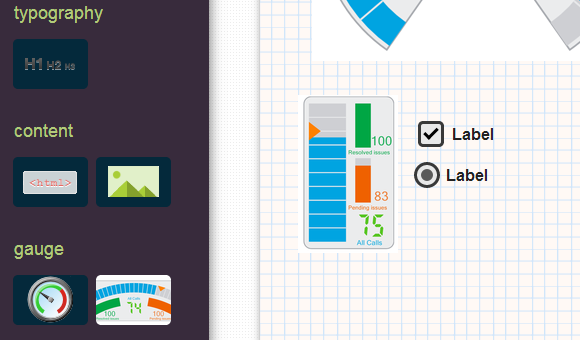

通过拖曳进行布局
所见即所得的编辑器可以帮助您快速实现心中的蓝图。
编辑每个组件的属性也是非常的直观和简单

快速选点
为了使得界面上的计量器反应真正的物理世界，我们可以通过关联点服务器上的具体点来使得数据可以被同步。选择后，您便可以在智能终端上查看到这些物理世界的变化了。

移动端友好的界面
您既可以在桌面电脑上进行编辑，也可以舒适的通过大屏平板（或许您的手机也够大？）进行编辑。之后便可以非常友好的在各个智能终端上进行展现了
在这过程中，您完全不需要下载任何终端，只要打开浏览器，一切都在那里了。